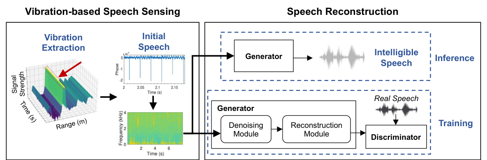
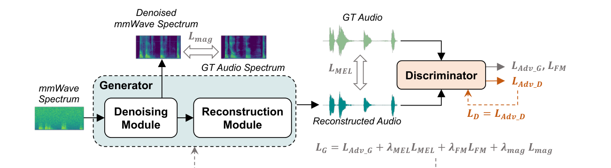
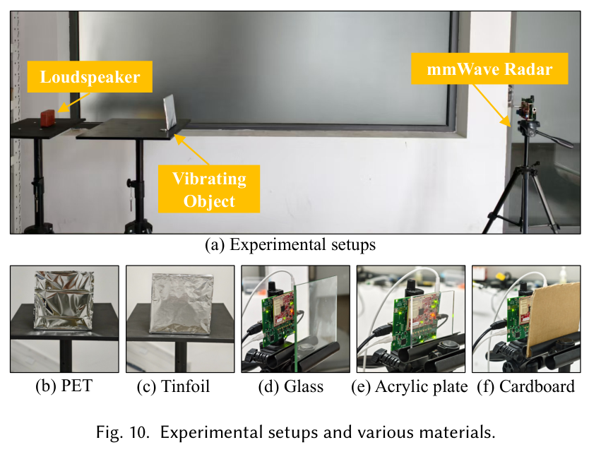
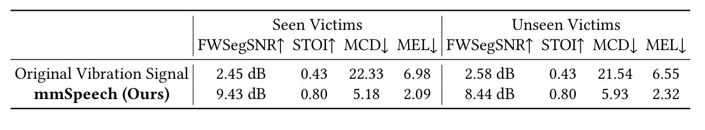
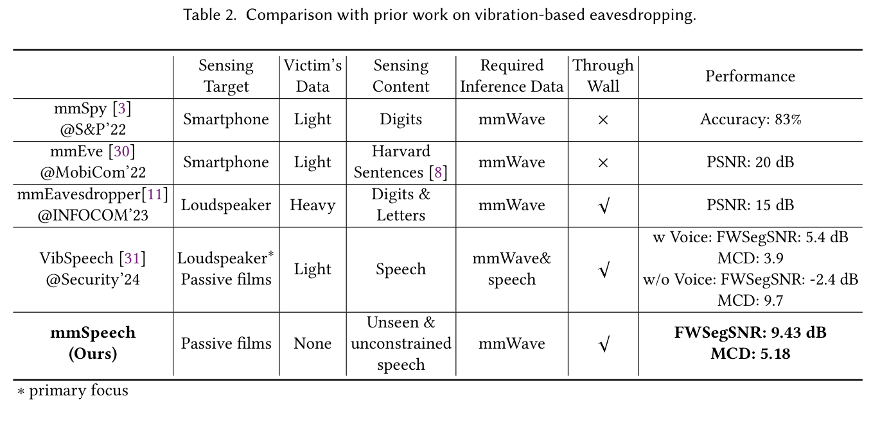
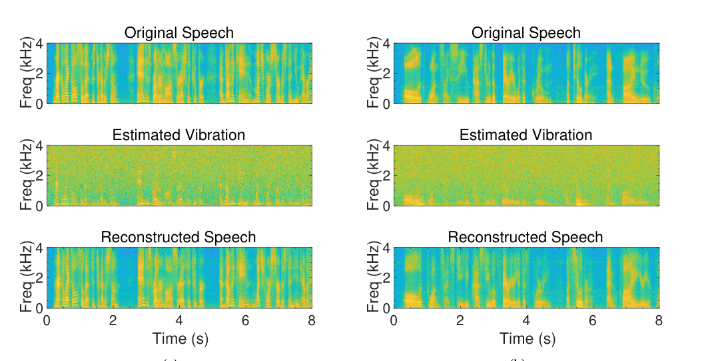
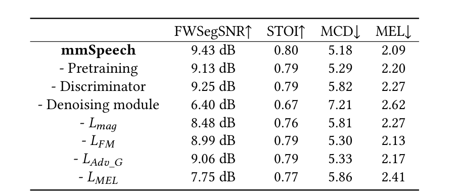

IMWUT 9(4), Article 179
Publication
We Can Hear You with mmWave Radar! An End-to-End Eavesdropping System
Dachao Han (XJTU), Teng Huang (XJTU), Han Ding (XJTU), Cui Zhao (XJTU), Fei Wang (XJTU), Ge Wang (XJTU), Wei Xi (XJTU)
mmSpeech is an end-to-end mmWave-based speech privacy analysis system that reconstructs intelligible speech from loudspeaker-induced vibration signals, including through-wall settings and without prior knowledge of the target speaker.
9.43 dB FWSegSNR / 0.80 STOI
8.44 dB FWSegSNR / 0.80 STOI
Overview
Voice-enabled devices and remote meetings make loudspeaker playback common in offices, meeting rooms, and homes. This also introduces a speech privacy risk: acoustic content can induce subtle vibrations in nearby objects. This paper presents mmSpeech, an end-to-end mmWave-based system that studies how intelligible speech can be reconstructed from loudspeaker-induced vibration signals.
The work is framed as a privacy and security analysis. Compared with microphone, optical, or contact-sensor based eavesdropping, mmWave sensing can capture micro-vibrations without direct contact and can operate through certain non-metallic barriers. mmSpeech further removes the need for prior recordings of the target speaker, making the threat model more general than earlier mmWave speech-recovery systems.
mmSpeech shows that mmWave-estimated vibration signals can be converted into intelligible speech, even under through-wall settings and unseen-speaker conditions.
Main Contributions
- Introduces mmSpeech, an end-to-end mmWave speech reconstruction pipeline based on playback-induced vibrations.
- Studies sensing design choices such as vibrating materials, radar sampling rate, sensing distance, angle, and blockage materials.
- Designs a DNN pipeline that reconstructs speech from noisy mmWave spectrograms, combining denoising, reconstruction, and adversarial refinement.
- Uses synthetic mmWave-like vibration data and selective ASR encoder fine-tuning to improve downstream speech understanding.
- Demonstrates strong reconstruction quality on seen and unseen speakers, with reported seen-victim metrics of FWSegSNR 9.43 dB, STOI 0.80, MCD 5.18, and MEL 2.09.
Threat Model and System Overview
The paper considers a setting where people are speaking through a loudspeaker in a room, such as an online meeting. A passive vibrating material is near the loudspeaker, and a portable mmWave radar captures the sound-induced vibrations either from inside the room or through a barrier such as glass. The attacker is assumed to have no prior knowledge of the speaker's identity, speech characteristics, or utterance content.
mmSpeech has two main stages:
- mmWave-based vibration sensing extracts vibration signals and produces an initial speech estimate from radar measurements.
- DNN-based speech reconstruction denoises the initial estimate, restores missing frequency components, and generates more intelligible speech.

Speech Reconstruction Model
The reconstruction model is GAN-inspired. The generator first suppresses noise in the mmWave spectrogram, then reconstructs a speech waveform from the denoised representation. A discriminator provides perceptual feedback so the generated speech becomes more natural and intelligible.
The model uses a Spectrum Denoising module and a Speech Reconstruction module. The denoising component includes TS-ConvFlash blocks to model temporal and frequency dependencies efficiently. To compensate for limited real mmWave speech data, the paper also synthesizes mmWave-like signals by mixing clean speech with purple and Gaussian noise, then fine-tunes on real measurements.

Experimental Setup and Dataset
The implementation uses a commercial TI IWR6843ISK mmWave radar with DCA1000EVM. The radar operates with a 1T4R configuration, 4 GHz bandwidth, and an 8000 Hz vibration sampling rate. The default sensing setup places the passive film about 0.5 m from the loudspeaker and about 1.5 m from the radar.
The dataset includes 2,400 collected speech clips from LibriSpeech playback, covering 47 speakers with different genders, ages, and accents. The paper constructs three datasets: a synthetic pretraining set from LibriSpeech, a seen-victim set, and an unseen-victim set for evaluating generalization to speakers not used during training.

Evaluation Highlights
mmSpeech substantially improves reconstructed speech quality over the raw vibration signal. On the seen-victim dataset, it improves FWSegSNR from 2.45 dB to 9.43 dB and reduces MCD from 22.33 to 5.18. On unseen victims, it still achieves 8.44 dB FWSegSNR, 0.80 STOI, 5.93 MCD, and 2.32 MEL.

The comparison table emphasizes the difference from prior vibration-based eavesdropping systems. Earlier systems either focus on digits/letters, require victim speech data, or do not support the same through-wall and unconstrained-speech setting. mmSpeech works with mmWave-only inference data and no victim voice prior.


Ablation and Limitations
The ablation study shows that the denoising module is especially important: removing it drops FWSegSNR from 9.43 dB to 6.40 dB and increases MCD from 5.18 to 7.21. Pretraining, discriminator feedback, and the spectral losses also contribute to final quality.
The paper also notes several practical limits. Performance depends on the relative position between radar and vibrating material; reliable recovery is reported within about 4.5 m and below roughly 45°. Through-wall performance also depends on wall material and thickness, so heavier or more absorptive barriers can reduce effectiveness.

Resources
{kind=link}
{kind=link}
{kind=link}
Citation
@article{han2025mmspeech,
title = {We Can Hear You with mmWave Radar! An End-to-End Eavesdropping System},
author = {Han, Dachao and Huang, Teng and Ding, Han and Zhao, Cui and Wang, Fei and Wang, Ge and Xi, Wei},
journal = {Proceedings of the ACM on Interactive, Mobile, Wearable and Ubiquitous Technologies},
volume = {9},
number = {4},
article = {179},
year = {2025},
doi = {10.1145/3770708}
}